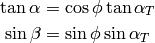

4.2. Setting Freestream Conditions in Cape¶
Setting freestream conditions for the various solvers in Cape is controlled from
the JSON file (e.g. pyCart.json) and the run matrix file. Varying
freestream conditions like Mach number, angle of attack, sideslip angle,
temperature, and pressure is one of the most common ways to use Cape or any
other CFD wrapper.
Cape adds a few capabilities to this procedure that are not exactly typical. The freestream conditions are divided into two groups. The first group sets the orientation of the velocity relative to the CFD domain, and the second group sets the freestream state.
4.2.1. Angle of Attack and Sideslip¶
Most CFD solvers need an input angle of attack and sideslip angle, commonly known as alpha and beta, respectively. Cape recognizes this and provides both as standard input variables. However, there is another convention that is especially common in the missile and launch vehicle fields that uses the total angle of attack and roll angle. The parameters are related using the following two equations.

The total angle of attack is the angle between the body x axis (or the x axis of the CFD coordinate system) and the velocity, and the roll angle gives the angle of the velocity projected into the CFD yz plane.
Cape also provides alpha_t and phi as variables for the user, and it automatically calculates alpha and beta accordingly. These are listed in the JSON settings description, and more details are provided below.
alpha:
dict
- Group:
True| {False}- Whether or not to consider the angle of attack as a group key
- Type:
"alpha"- Trajectory key type, must be
"alpha"for this type of key- Value:
"float"- Name of Python type for this key, must be
float- Label: {
True} |False- Whether or not to use the value of this key in the folder name
- Abbreviation: {
"a"} |str- Abbreviation for this variable when creating folder names
- Format: {
"%s"} |"%.2f"|str- Print flag for the name of the folder
- PBSLabel: {
True} |False- Whether or not to use the value of this key in the PBS job name
- PBSFormat: {
%.1f} |%s|str- Print flag for the name of the PBS job
beta:
dict
- Group:
True| {False}- Whether or not to consider the angle of attack as a group key
- Type:
"beta"- Trajectory key type, must be
"beta"for this type of key- Value:
"float"- Name of Python type for this key, must be
float- Label: {
True} |False- Whether or not to use the value of this key in the folder name
- Abbreviation: {
"b"} |str- Abbreviation for this variable when creating folder names
- Format: {
"%s"} |"%.2f"|str- Print flag for the name of the folder
- PBSLabel: {
True} |False- Whether or not to use the value of this key in the PBS job name
- PBSFormat: {
%.1f} |%s|str- Print flag for the name of the PBS job
- SkipIfZero:
True| {False}- If set, skip this in the folder name. For example, a folder name would be
m2.5a1.0instead ofm2.5a1.0b0.0.
If the user names a trajectory key alpha or beta, these settings
automatically get applied. However, the user can alter the default settings in
the JSON file or use a different variable name. If the variable name is
something completely different, like "TV", the Type flag can still define
the variable as an angle of attack. See the following example.
"TV": { "Type": "alpha", "Format": "%05.2f" }
Setting the Format flag to has two purposes. The first is to keep a
consistent number of characters and have the folder names sorted in a more
logical order. For example, a10.00 comes before a2.00 but not
a02.00. The second reason for using Format other than "%s" is to trim
extra digits. This avoids having folder names such as a2.7893478247.
The second way to define the flow angles is using alpha_t and phi.
alpha_t:
dict
- Group:
True| {False}- Whether or not to consider the angle of attack as a group key
- Type:
"alpha_t"- Trajectory key type, must be
"alpha_t"for this type of key- Value:
"float"- Name of Python type for this key, must be
float- Label: {
True} |False- Whether or not to use the value of this key in the folder name
- Abbreviation: {
"a"} |str- Abbreviation for this variable when creating folder names
- Format: {
"%s"} |"%.2f"|str- Print flag for the name of the folder
- PBSLabel: {
True} |False- Whether or not to use the value of this key in the PBS job name
- PBSFormat: {
%.1f} |%s|str- Print flag for the name of the PBS job
phi, phiv:
dict
- Group:
True| {False}- Whether or not to consider the angle of attack as a group key
- Type:
"phi"- Trajectory key type, must be
"phi"for this type of key- Value:
"float"- Name of Python type for this key, must be
float- Label: {
True} |False- Whether or not to use the value of this key in the folder name
- Abbreviation: {
"r"} |str- Abbreviation for this variable when creating folder names
- Format: {
"%s"} |"%.2f"|str- Print flag for the name of the folder
- PBSLabel: {
True} |False- Whether or not to use the value of this key in the PBS job name
- PBSFormat: {
%.1f} |%s|str- Print flag for the name of the PBS job
- SkipIfZero:
True| {False}- If set, skip this in the folder name. For example, a folder name would be
m2.5a1.0instead ofm2.5a1.0r0.0.
4.2.2. Freestream State¶
The rest of the freestream variables are Mach number, freestream temperature, and freestream pressure or something equivalent. Cart3D is an inviscid solver, and only needs the Mach number, but even then defining a freestream state can be useful for post-processing or providing a reference for thrust values.
OVERFLOW and FUN3D use freestream static temperature and Reynolds number per
unit grid length as input variables. Calculating this Reynolds number is not
particularly challenging, but Cape makes it easy to just specify freestream
static pressure or freestream dynamic pressure instead. Cape will automatically
calculate Re using the temperature and either static pressure or dynamic
pressure when setting up a case. Conversely, the user may define Re in the
standard manner, and it will automatically calculate the freestream static and
dynamic pressures as reference variables using
cape.trajectory.Trajectory.GetPressure() and
cape.trajectory.Trajectory.GetDynamicPressure().
Finally, most codes also allow the user to specify non-default values of the freestream ratio of specific heats, which can be done using the gamma run matrix variable type.
Each of these trajectory key types are mach, T, Re, gamma, p, and q. Each of these variables and their aliases are listed in the JSON settings description, and they have the same suboptions as the alpha and beta keys described in the previous section.